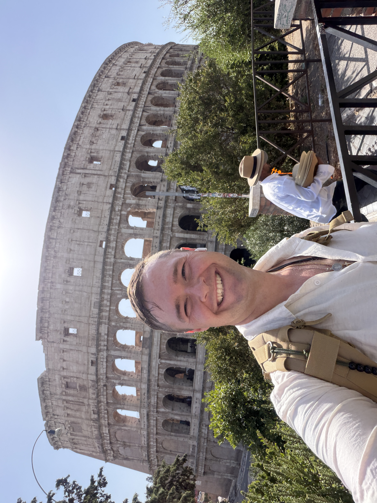

Spencer T. Crosland

Spencer T. Crosland was born in Ogden, Utha, USA in the mid 1990's. He has lived all over the United States and grew up with a constant evolution in techology. Mr. Crosland has always had a talent and passion for computers; even before the creation of Google. As a child Mr. Crosland used computer to play games, explore the beginings of the internet, and at times he would take apart computers just to understand how they worked.
As a young adult Spencer T. Crosland pursued a physics degree at Califonia State University East Bay (CSU EB) in Hayward California. With a love of computers and Physics Mr. Crosland designed a printer our of old desktop computer CD drives using an adrino, small motors, and a pen. Later Mr. Crosland studied Autmovie Engineering in Ventura Califonia where he obtianed work at a local car dealership.
After the 2019 Pandemic ended Spencer T. Crosland saw the rise of technology rapidly increasing. Rather than be complacent or afraid of the new tech advacements like AI or Cloud Computing he sought out a new degree with BYU-I. At BYU-I Mr. Crosland began his studies with Computer Engineering until he found his passion for software and chose to refine his studies around Web Development and Grphic Design.
Spencer T. Crosland has a love to travel the world and help anyone he meets in his explorations. This passion comes from his father taking him on many road trips throughout the United States as a young boy. Mr. Crosland's mother is an Australian citizen and sent him to Australia as a teen; this gave Mr. Crosland the hunger to explore the world. Mr. Crosland has explored Austrlia, Asia, Europe, and the United States many times over.
Once Mr. Crosland graduates from BYU-I he hopes to work in the tech industry all across the world. Chossing Web Development and Graphic Design as his course of study allows him to not just bring to life the digital creations of others, but to connect the phsyical world together through those creations. Spencer T. Crosland is dedicated in this mission with numerous skills and passion.
Why Cat Cowboy
Spencer T. Crosland visited his father every summer and Chrismas in Utah or Wyoming. There he experienced the open feilds and animal life of cowboys while learning the love and values of fmaily. In his early teens Mr. Crosland live in Wyoming conistantly for a few years where he learned to shoot, serve others, and brave the extreme wilderness of Wyoming. In the end he embraced the love and life of cowboys just like the local of Wyoming.
With a love for animals Mr. Crosland would play and study the animal life all round him from Wyoming to Australia. As a boy Spencer T. Crosland had many dogs, but as a young adult he adopted four cats. Two were trained and medical service animals to help others and the other two just wandered into his life shortly after. In his free time Mr. Crosland loves to explore nature with his cats or cuddle up with them as he works.
So with his love of animals, particularly his cats, and the life of a cowboy Spencer T. Crosland came up with the name Cat Cowboy. For years it was just a fun name for his cats and even a neon light of a cat in a cowboy hat in his home. When it came time to create a portcolio for all his project at school Mr. Crosland thought it would make a great brand name a logo. So Mr. Crosland set out with his graphic design and Web Development skills to create this site which houses all his work.
Cat Cowboy Designs is not just a portfolio for his work in Graphic Design or Web Development. This site and brand is also a way to reach out accross the world for client work at an affordable rate for everyone. While AI can create images for you in minuets Mr. Crosland knows that personal touch in the process makes your designs stronger and far more personal. With this Cat Cowboy Designs can create any graphic you desire and set up a webpage for you; even if you just want to host it for free on Github or pay for a domain name.